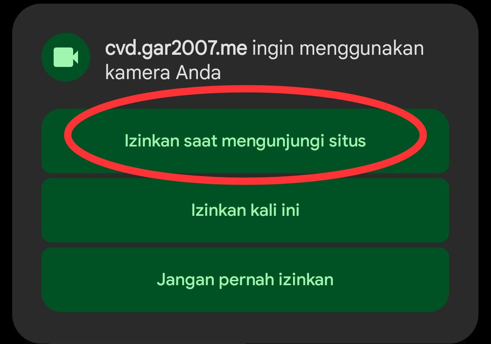
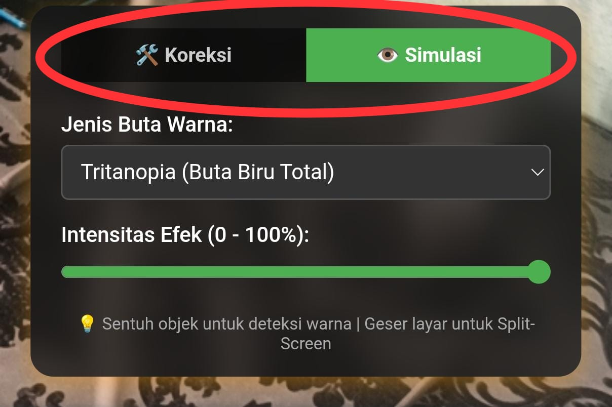
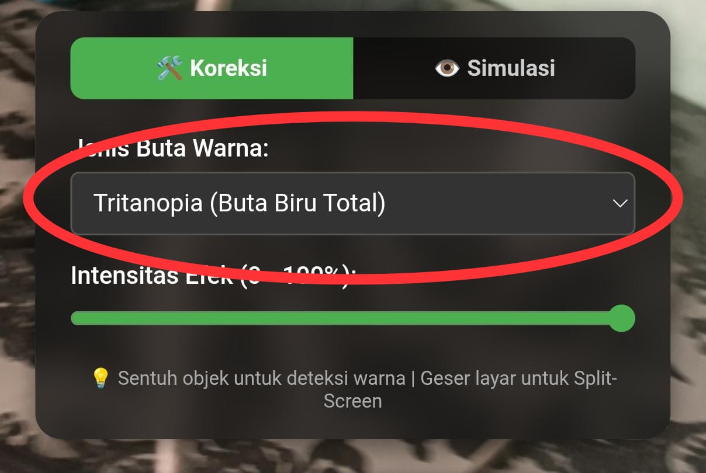
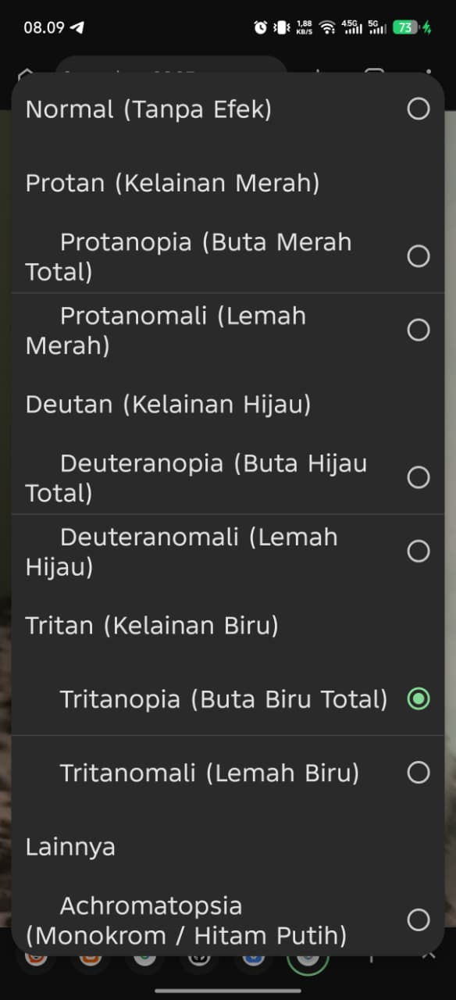
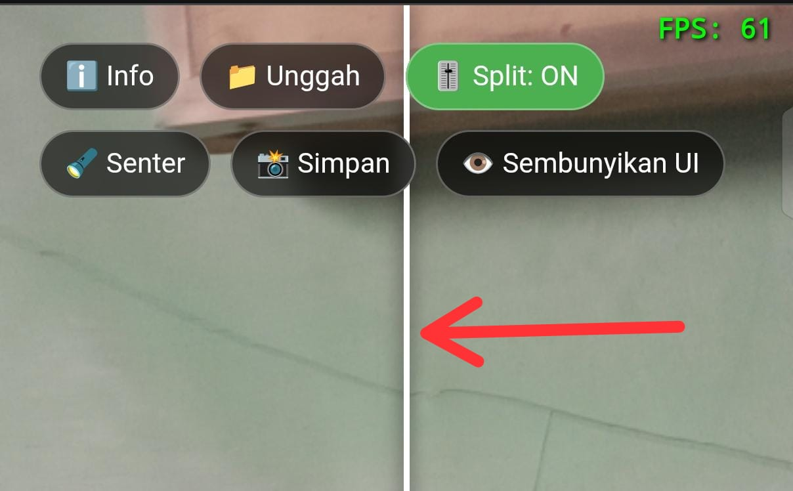
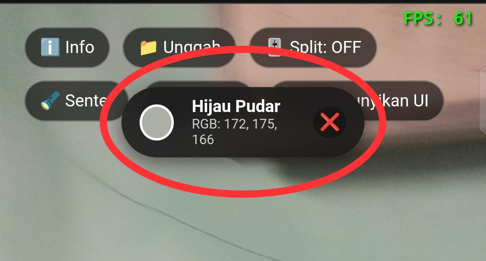
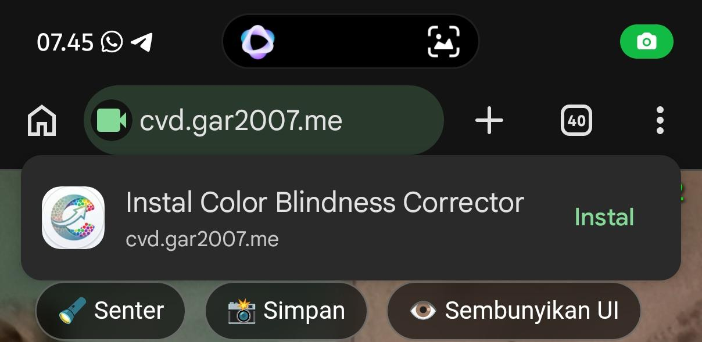
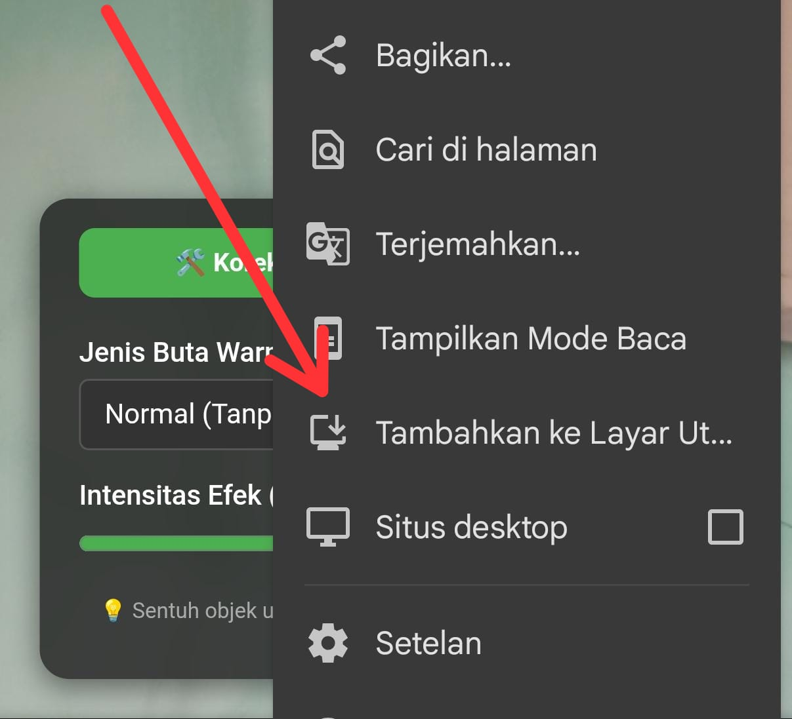
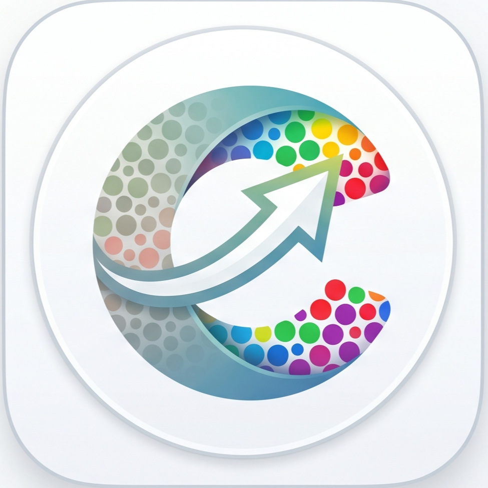

💡 Sentuh objek untuk deteksi warna | Geser layar untuk Split-Screen
Real-Time Color Blindness Corrector & Simulator v1.0.0
Mata manusia menangkap cahaya melalui tiga jenis sel kerucut: L (Long/Merah), M (Medium/Hijau), dan S (Short/Biru). Penderita buta warna mengalami anomali atau ketiadaan pada salah satu sel ini, yang menyebabkan spektrum warna tertentu "tumpang tindih" atau hilang.
Aplikasi ini menggunakan metode Daltonization, yaitu teknik komputasi aljabar linier yang memetakan ulang informasi warna yang hilang ke dalam spektrum yang masih bisa ditangkap oleh mata pengguna. Proses ini dilakukan melalui WebGL Fragment Shader, di mana jutaan piksel video diproses secara paralel langsung di GPU perangkat untuk menjamin performa 60 FPS tanpa beban pada CPU.
Kesulitan melihat spektrum cahaya merah panjang. Terbagi menjadi Protanomali (lemah) dan Protanopia (buta total).
-> Protanopia: Ketiadaan total sel kerucut merah. Warna merah terlihat sangat gelap, hampir seperti hitam atau coklat tua.
-> Protanomali: Sel kerucut merah bermutasi. Penderita masih bisa melihat merah, namun spektrumnya bergeser mendekati hijau, membuat warna memudar.
Kelainan paling umum. Kesulitan membedakan variasi warna merah dan hijau.
-> Deuteranopia: Ketiadaan total sel kerucut hijau. Warna merah dan hijau sangat sulit dibedakan dan sering terlihat sebagai spektrum warna kuning atau kecoklatan.
-> Deuteranomali: Kelemahan pada reseptor hijau. Kontras antara warna merah, hijau, kuning, dan oranye menjadi sangat rendah.
Kelainan langka. Kesulitan membedakan warna biru dari hijau dan kuning dari ungu.
-> Tritanopia: Ketiadaan total sel kerucut biru. Warna biru terlihat hijau, dan kuning terlihat ungu atau abu-abu.
Kelainan paling parah. Tidak bisa melihat warna sama sekali, hanya dalam gradasi abu-abu.
-> Achromatopsia: Ketiadaan total sel kerucut. Penglihatan sangat sensitif terhadap cahaya, dan semua warna terlihat sebagai nuansa abu-abu.
Saat pertama kali dibuka, sistem akan meminta izin akses kamera. Pilih "Izinkan". Gunakan tombol 📷 Kamera di pojok atas untuk kembali ke mode kamera jika sedang berada di mode unggah foto.

Pilih antara 🛠️ Koreksi (untuk membantu membedakan warna) atau 👁️ Simulasi (untuk melihat apa yang dilihat penderita buta warna). Gunakan Dropdown untuk memilih jenis spesifik (misal: Deuteranopia).

Setelah dropdown dipilih, pilih jenis buta warna yang sesuai (misal: Protanopia, Deuteranopia, Tritanopia).


Aktifkan tombol 🎚️ Split: OFF menjadi ON. Garis putih akan muncul di tengah layar. Geser jari Anda pada area layar mana saja untuk menggeser garis tersebut. Sisi kiri menunjukkan hasil proses, sisi kanan menunjukkan warna asli.

Pastikan mode Split dalam posisi OFF. Ketuk pada objek tertentu di layar video. Panel di atas akan menampilkan Nama Warna (Bahasa Indonesia) dan nilai RGB. Jika cahaya kurang, sistem akan memberikan peringatan akurasi rendah.

Gunakan 🔦 Senter untuk membantu akurasi warna di tempat gelap. Gunakan 📸 Simpan untuk mengambil foto hasil olahan WebGL langsung ke galeri Anda.
Saat membuka website pertama kali, akan ada opsi untuk menginstall aplikasi. Tekan "📲 Instal App" untuk menginstall untuk menginstal aplikasi ke perangkat Anda. Atau jika terlewat, di browser anda, masuk ke menu titik tiga di pojok kanan atas, lalu pilih "Tambahkan ke Layar Utama"



Universitas Negeri Medan